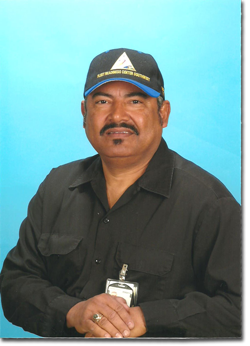
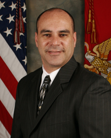
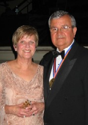
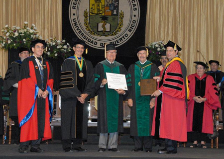
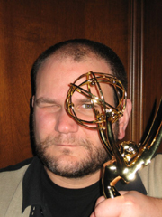
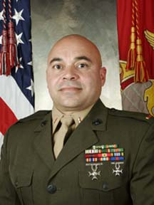
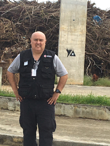
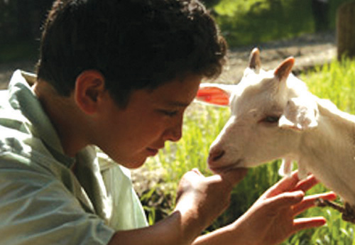

| |
| Home |
| Calendar |
| About Puerto Rico |
| About HPRSD |
| Become a member |
| La Casita Museum |
| Our Youth |
| Pride in Our Own | Volunteers |
| Sponsors |
| Interesting Links |
| Directions |
| Contact Us |
* Type in the email on record above and follow instructions to make changes needed.
* Also, add the following email in your contacts list: quepasa@houseofpuertorico.com.

HPRSD is A Non Profit Organization IRS code
501 (C) 3
Voice Mail:
619-234-3445
EMail:
hprsd@houseofpuertorico.com
Pride in Our Own: Orgullo Boricua |
||||||||||||||||||||||
|
It is with great pride that we congratulate our following House of Puerto Rico San Diego members whom have recently been awarded with distinctions. Noel Acevedo recently graduated from the National War College with a masters in National Security Strategy. Last we heard (now in Washington, DC), he got promoted to GS-15. He's working at the Defense Information Systems Agency (DISA) directly under the Acquisition Executive. His job is to oversee acquisition programs under 3 specific Program Executive Officers: PEO Global Command Control Capabilities, PEO Information Assurance and Network Operations, and PEO Global Information Grid Enterprise Services. Congratulations! Latest news from Noel in DC: In May 2008, I graduated from the Defense Leadership & Management Program. After 17 months at DISA, the Army wanted me back. I was offered the position of Chief Technology Officer for the Future Combat Systems program and I’ve been there since Nov 2008. I love it. I get to do a little travel but I have fun in my work. Eddie Batiz is the CEO of Batiz.com and Inbound Clicks 2008 Business Man of the Year by the California Hispanic Chambers of Commerce (CAHCC) "Eddie Batiz is an inspirational example of the successful Hispanic entrepreneur," said Joel Ayala, President and CEO of the CAHCC. "Eddie has faced common obstacles and gotten past them. He's taken advantage of our organization's deep network and partnered with other Hispanic business owners. We're proud to honor Eddie Batiz this year," Ayala noted. Eddie's company has garnered some impressive notoriety, including Hispanic Business magazine's 2001 Top Ten List for "Entrepreneur of the Year," Entrepreneur magazine's 2001 "Hot 100 Fastest Growing Companies" list, the Latin Business Association's 2001 Business of the Year; and Hispanic Magazine's "Hispanic Entrepreneur 100" list for 2002. Ernie Castro & Mike Goupill were awarded the 2012 AIDS Warrior Award during the annual World AIDS Day Candlelight Vigil December 1, 2012 at the Pilgrim United Methodist Church in Vista, CA. The North County World AIDS Day PLanning Committee recognized "the long and tireless work over the many years on behalf of folks with HIV and AIDS since they arrives in North Country tweinty or so years ago." -Caroline Theiss-Aird Manny Cepeda, Adjunct Professor of Afro-Cuban/Caribbean Percussion at Grossmont College. Since his retirement in 2004 after 31 years in the US Navy Music Program Manny has become a musical symbol in San Diego, New York and Puerto Rico. He has been thought after for his original music, written the music for our playwright Evelyn Díaz Cruz’s presentation of “Yerma” in 2004 and has to date produced 3 CDs to his name. Manny lead the US Navy Steel Band, The US Navy Show Band and was the Leader of San Diego’s Navy Band Southwest from 1998 to 2000. Well-deserved kudos!
Jaime Diego Chavez, Eastlake High School Counselor, was selected as the Sweetwater Union High School District 2005 "Counselor of the Year" and recently recognized by the San Diego Metropolitan Magazine as one of San Diego's "40-under-40." He is a Counselor, Peer Mediation Coordinator, TUPE- Tobacco Use Prevention and Education Program Coordinator, M.E.Ch.A. Advisor (Chicano /Latino Club), and coordinates a variety of other activities on campus: Tolerance assembly, Health and Safety Week, and College Outreach activities. Jaime is HPRSD's Vice President, developed our well-known Culture Corner, and is a mentor/leader for HPRSD's College Ctudent / Youth Committee. Martin Crespo received the US Navy Fleet Readiness Center Southwest's Productivity Recognition Employee of the Year Award for quality performance in 2012.
Evelyn Díaz Cruz, Assistant Professor of Theatre Arts at the University of San Diego, has been selected as a top-ten finalist for the Repertorio Español's Playwright Competition in NYC for her full-length play "Glass Cord." All finalists will have readings of their plays during the second week December in order to compete for the final five prizes. The grand prize winner will receive a full production at the prestigious Repertorio Español, which is the top playhouse for Latino work in the nation! Latest news: Evelyn received third prize in the competition with much acclaim. Congratulations!! "Glass Cord," was given a workshop production right here in San Diego in January of 2002 and received the The University of California Irvine's 28th Chicano/ Latino Literary 2002 Award. Originally from the Bronx, New York, Ms. Cruz currently resides in San Diego where she teaches classes on playwriting, theatre, and acting, and also directs shows for the USD Theatre Arts Program. Recent projects include an adaptation of Garcia Lorca's "Yerma" and the "Grapes of Wrath." Ms. Cruz earned her master of Fine Arts degree in Playwriting from the University of California at Los Angeles. We wish Evelyn the very best on her remarkable piece! More news: Evelyn Díaz Cruz headed to New York City in March '06 for a reading of her play 'La Lupe' at the famous Spanish Rep. This opportunity is a result of winning third prize in the 2004 Spanish Rep playwright competition for her play ' The Glass Cord.' Evelyn is hard at work writing her next play Muertos: A Day of the Dead Play. Yet more news: Evelyn was recently awarded the 2008 KPBS Hispanic Heritage Local Hero Award - Arts. Learn more... We were just made aware that Dennis Flores, HPRSD Director, was selected for the 2009 National Image, Inc.'s Meritorious Military Service Award for Department of Defense Employees. This is the first year that civilian employees supporting their branch of service are recognized. In Dennis' case, he is the first & only civilian employee selected for the Marine Corps from thousands of qualified civilian employees. Dennis and his wife, Judy, will be receiving the award at San Antonio, Texas on May 14, 2009. Dr. Grillo-López received the Discovery Health Channel's Medical Honors Award in June 2004 for his leadership efforts in streamlining clinical trial research and FDA approval for IDEC's Rituxan™ cancer drug in record time. Dr. Grillo-López was the Chief Medical Officer for IDEC Pharmaceuticals (now Biogen IDEC) before retiring in 2001. Dr. Grillo-López is currently the Chairman of the Neoplastic and Autoimmune Diseases Research Institute (Rancho Santa Fe, California) where he continues his work in cancer research. Additionally, he serves on a number of (~10) Board of Directors and/or Scientific Advisory Boards. Dr. Grillo-López earned his medical degree from the University of Puerto Rico Medical School. In June 2003 he was named "Distinguished Alumnus" of the University of Puerto Rico during its Centennial celebrations. Dr. Grillo-López is vice-chair of HPRSD's Board of Directors and is taking on the leadership role to establish the new "Museum of The House of Puerto Rico San Diego." More news... Dr. Antonio Grillo received an Honorary Doctorate and plaque from the University of Puerto Rico Medical Sciences in June 2013 in acknowledment of his dedication and accomplishments in cancer research. On right is Dr. Norman Maldonado, Dr. Grillo's professor of Hematology/Oncology and mentor. Writer and producer Javier Grillo-Marxuach won a Writer's Guild Award on 2/4/06 for his work on the highly acclaimed TV drama, Lost. Check out his photo here when he won his Emmy. He has also won a George Foster Pebody award. His work has been evident in popular shows such as Boomtown, Law & Order: Special Victoms Unit, The Pretender, Charmed, The Chronicle, SeaQuest and Jake 2.0. Javier received his BA in creative writing and cultural studies from Carnegie Mellon University and an MFA in screen writing from the University of Southern California. Javier is now moving on as Co-Executive Producer for the NBC show Medium with its new season premiering 11/15/06. Congratulations! Learn more about Javier's work. We are proud to announce that one of our own members has been selected in receiving a very difficult to earn national award. Pedro Hernandez will receive the Department of Defense Meritorious Service Award given by the National Image, Inc. The award recognizes leasers that distinguished themselves in promoting civil rights, equal opportunity, community service, and enhancing a positive understanding between Hispanics and members of the military and civilian population of the Nation. The award will be presented in a large gala in Las Vegas on April 17th. These events are attended by high senior military and Pedro was selected as the only active duty Marine Corps recipient. That's an amazing accomplishment for three reasons: (1) He was selected out of 175,000 Marines; (2) He now belongs to a rare group of only 19 previous Marines being recognized for the award; (3) I have been informed by reliable headquarters' officials familiar with the program that Pedro is very likely the first Marine of Puerto Rican decent to earn the award. (by Dennis Flores, HPRSD Board of Directors) Michael Kingston, son of Terry & John, is an up and coming screenwriter in Hollywoord. He has two films done already: Population 426 (2006) and Free (2001). Learn more...
Aned Muñiz Gracia, a Ph.D. candidate from the University of San Diego, is featured in the Sunday, October 16th issue of the San Diego Union Tribune entitled, "Professor's passion obvious in any language" by Nina Garin. Her language skills in Spanish, English, Russian, German, Italiana, and French will no doubt take her very far--for herself and well as her students. Well deserved kudos! Aned Muñiz Gracia was selected by the California Language Teachers' Association (CLTA) and the Italian Government for a partial grant to attend a three week, high profile "glottodidattica" course at the Universita' di Venezia (University of Venice) this summer. See interview with Primera Hora. More news: Our own, Aned Y. Muñiz Gracia, a Ph.D. candidate from University of San Diego, received the Associated Student Government's Outstanding Faculty Award at MiraCosta College during its 2006 commencement ceremonies. Aned is a part-time faculty at MiraCosta College teaching Italian, Russian, Spanish, and German as she pursues her degree in USD's School of Education's Leadership Studies program.
The recipient must be a well-established manager or have project responsibility. This individual should have eight to nineteen years experience in a technical field and should have made significant contributions in that arena. Frances is currently Deputy, Vice President, AC3DI, at Lockheed Martin. Congratulations!
Bobby Rivera is a retired peace officer in the San Diego area. He has been appointed and served on numerous boards and commissions, including the national board of directors of the National Marrow Donor Program (NMDP). His appointment to the NMDP Board was for his recruitment efforts and coordinating two of the largest marrow drives in San Diego history. The Chicano Federation recognized him for the 2008 Willie Velasquez award for his work as a peace officer and volunteerism. He received his B.A. in Sociology from California State University San Marcos and is currently a PhD candidate in Sociology at the University of California, Riverside. Roberto is the 2018 Fulbright Scholar Award recipient in criminology for Jamaica. His research is in the advancement of restorative justice practices. He served as 2012 Vice President and is a Lifetime Member for the House of Puerto Rico San Diego. 28-year veteran and HPRSD member, Miguel Rosario, hasbeen promoted to Captain in the San Diego Police Department. Captain Rosario is the commander of theSDPD Northeastern Division which serves the neighborhoods of Carmel Mountain, Miramar, Miramar Ranch North, Mira Mesa, Rancho Bernardo, Rancho Encantada, Rancho Penasquitos, Sabre Springs and Scripps Ranch. Northeastern Division serves a population of 220,701 people and encompasses 121.8 square miles. Puerto Rican writer & director of "My Backyard Was a Mountain," has received the wonderful news that his film now qualifies for Academy Award consideration. Adam's film was shown here at the 2006 San Diego Latino Film Festival. We look forward to hear more from Adam. “My Backyard Was A Mountain” is the story of Adan, a Puerto Rican boy who has one day to find a home for his pet goat, Chivo, before his family relocates to New York City in the late 1950’s. While searching for a new owner for Chivo, Adan discovers the promise of first love with his childhood friend, Denise, whom he will also have to leave behind.
|
||||||||||||||||||||||
 Manny has earned the distinction of being
Manny has earned the distinction of being  Our own Frances Quiñones was awarded the Hispanic Engineer National Achievement Award for Professional Achievement on October 5-7, 2006 in Anaheim, CA.
Our own Frances Quiñones was awarded the Hispanic Engineer National Achievement Award for Professional Achievement on October 5-7, 2006 in Anaheim, CA.
|


House of Puerto Rico San Diego.